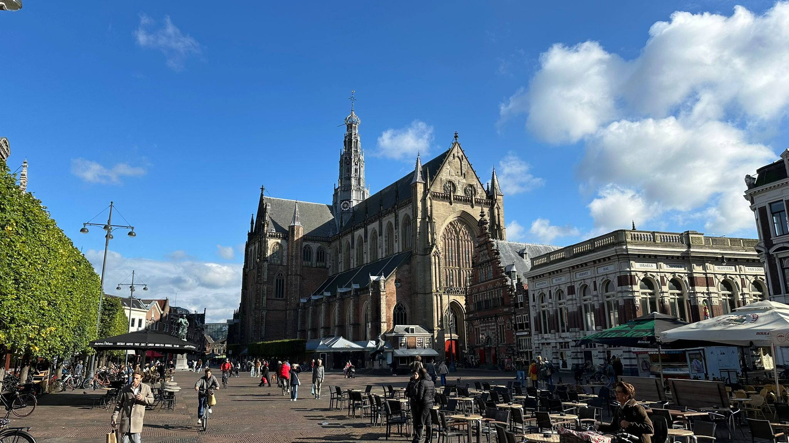

Haarlem international students
As an international student, the excitement of moving to a new country often comes with its fair share of challenges. Our guide is here to make your transition into life in Haarlem easier and more enjoyable. Whether it's tips on finding affordable housing, learning to bike through the city, or connecting with fellow students, we’ve got everything you need to turn those first-day nerves into confidence and excitement for the adventure ahead. Welcome to Haarlem, your new home away from home!

First step
When you arrive at Schiphol Airport and want to go to Haarlem, follow these simple steps to ensure a smooth journey. First, make your way to the train station located directly underneath the airport. Look for signs pointing the direction to the train platform. Once there, purchase a ticket to Haarlem from one of the ticket machines or counters, which accept cash and credit cards. Trains to Haarlem run frequently, typically every 15-30 minutes.